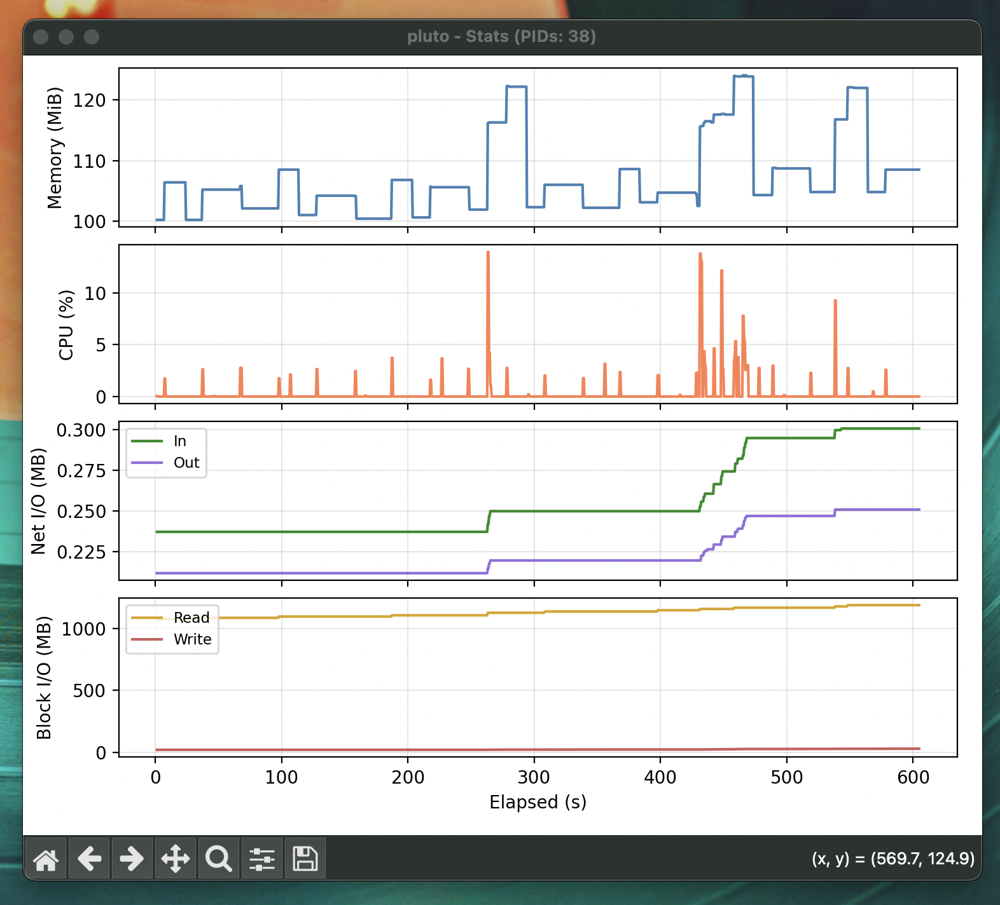

docker-monitor
Live Docker container resource monitoring with matplotlib.
uv run https://danielronalds.github.io/docker-monitor/docker-monitor.py <container>

Live Docker container resource monitoring with matplotlib.
uv run https://danielronalds.github.io/docker-monitor/docker-monitor.py <container>